Klebæk Høje
Grobkörniger grauer und roter Granit
Höhe über der Erde: 125 cm
Größte Breite: 106 cm
Größte Dicke: 60 cm
Runenhöhe ca.: 10 cm
Runeninschrift:
Revne und Tobbe machten diese "Steine" zum Andenken an Vibrog, ihre Mutter


Weitere Ansichten:


11 - Klebæk Høje (Mit Runenstein Bække 2, oder Kleggum Stein) - Letztes Update 01.08.2025
Listennummer : DR 30 / DK SJy 27
Geo-Daten: N 55°34'54.4" / O 9°08'42.7" - oder - 55.581786 / 9.145206 - oder - DK-6622 Bække, Klebækvej 9
Transliteration: hribną:ktubi : kri ukub þsi | aft : uibruk mþu sin
01.11.2023 - Skråfoto - hier zwei Screenshots. Skråfoto ist eine Webanwendung die von Klimadatastyrelsen weltweit kostenlos bereitgestellt wird - Freie Nutzung unter Beachtung der Lizenz: CC BY 4.0. Die Aufnahmen werden seit 2017 alle zwei Jahre erneuert und neben einer Senkrechtaufnahme wird ein Schrägbild aus jeder Himmelsrichtung angeboten, das man über eine Adresssuche aufrufen kann. Also gibt man in diesem Fall "6622 Bække, Klebækvej 9" in die Suchleiste ein, worüber der benachbarte Hof mit dieser Adresse eingeblendet wird. Die Schiffssetzung - hier die aktuellste Aufnahme vom 07.04.2023 - liegt dann leicht s-ö davon.
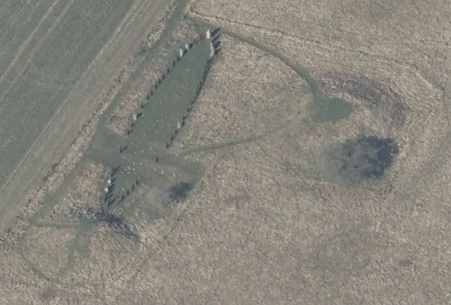
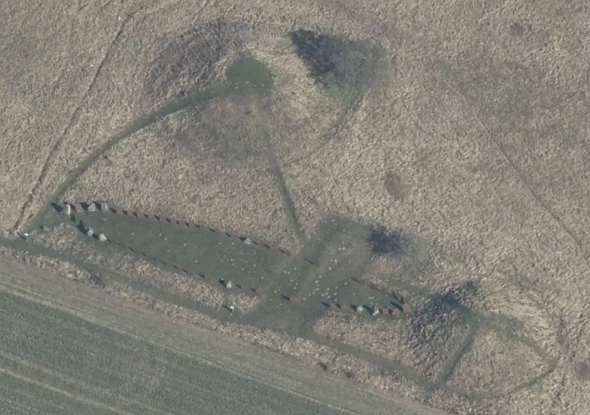
Im Rahmen meiner 2022er Jütland Wikingertour war ich am Montag, 30.05.2022, mal wieder vor Ort. Dabei konnte ich diese Fotografien machen.
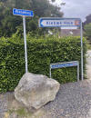 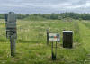 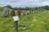 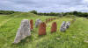 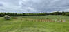 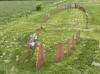 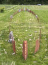 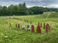 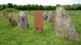 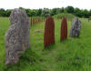


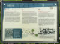 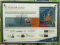 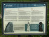 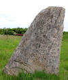 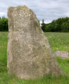 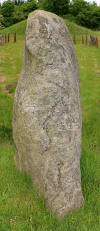 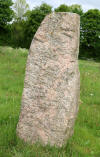 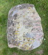 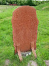 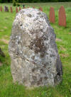


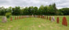 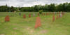 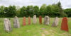 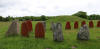 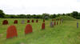 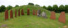


Über meine Recherchen zu dieser Schiffssetzung stieß ich heute (26.10.2021) auf die dänische Internetseite von "Skråfoto". Darüber habe ich diese Luftfotos abgerufen - Lizenz: CC BY 4.0
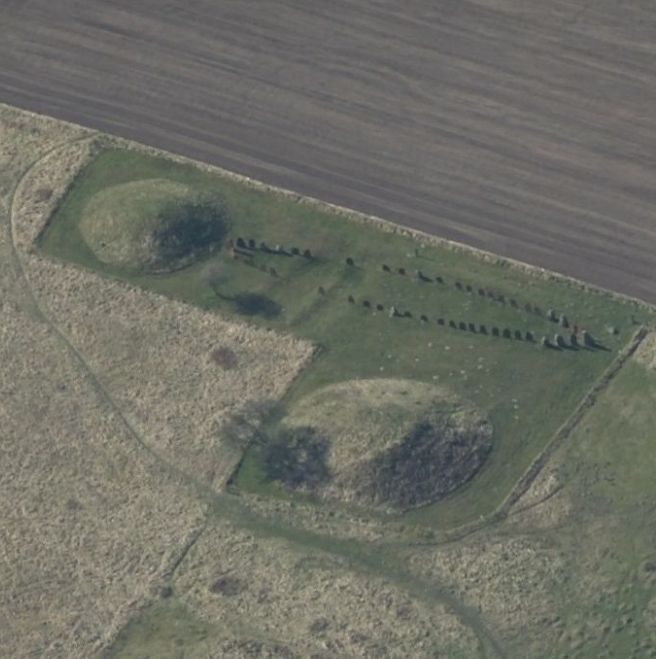
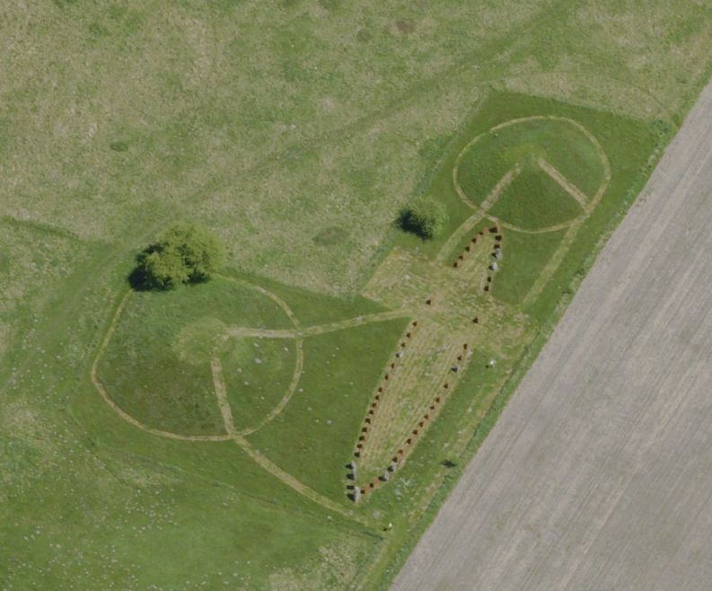
Quelle: Klimadatastyrelsen
Über Skråfoto wird nach Eingabe der Anschrift die Örtlichkeit mit einer Senkrecht- und je einer Aufnahme aus den verschiedenen Himmelsrichtungen wiedergegeben - Bild vom 20.04.2021 - abgerufen am 01.04.2022 / rechts 29.05.2021/01.04.2022.
Eintrag vom 09.09.2013:
Am 20.08.13 konnte ich der neu arrangierten Schiffssetzung einen Besuch abstatten. Ich habe diverse Fotos der Anlage, des (offenbar sandgestrahlten) Runensteins und der beiden Infotafeln gefertigt, die ich links eingestellt habe. Ein altes Foto der Schiffssetzung, bei der neben den 9 originalen Steinen die fehlenden durch kleine Steine ersetzt worden waren, lasse ich zum Vergleich mal stehen.
Eintrag vom 10.12.2011:
Die Schiffssetzung wurde jetzt neu arrangiert. Man hat die kleinen Steine durch Platten aus Cortenstahl ersetzt, die den ursprünglich vorhanden Steinen nachempfunden sind, wie ich bei meinen Internet-Recherchen feststellten konnte. Damit bekommt die Schiffssetzung einen ganz anderen Ausdruck!
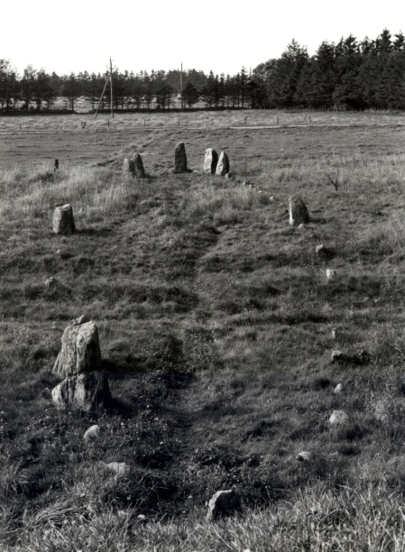
Fotografie von Marie Stoklund aus dem Jahr 1984 - Der Digitale Sammlung Nationalmuseum Kopenhagen entlehnt - Lizenz: CC-BY-SA
Nördlich von Bække liegt eine wikingerzeitliche Schiffssetzung mit einem Runenstein als Stevenstein bei zwei bronzezeitlichen Grabhügeln - Klebæk Høje genannt.
Die Örtlichkeit ist von Bække aus leicht zu finden. Man verlässt Bække in nördlicher Richtung - Skolegade, Klebækvej - und trifft dann nach ca. 1 km im freien Feld auf die heute geschützte Anlage.
Die SO-NW orientierte Schiffssetzung in der charakteristisch spitzovalen Form ist 45 m lang, 6,5 m breit und besteht aus 1,25 - 2,00 m hohen Steinen. Ursprünglich dürfte sie aus etwa 60 solcher Steine bestanden haben, aber heute sind nur noch 9 erhalten.
Die Anlage wurde in den Jahren 1956/57 durch Olfert Voss (*02.04.1926 - 07.02.2014, dänischer Archäologe) vom Nationalmuseum in Kopenhagen untersucht und restauriert. Bei dieser Untersuchung, wobei sich der Charakter der Anlage als Schiffssetzung herausstellte, fanden sich die Erdlöcher von den meisten der verschwundenen Steinen. Diese Löcher wurden nach der Untersuchung durch kleine Steine markiert. Nur 4 von den 9 größeren Steine, die heute dort stehen, standen tatsächlich an ihrem ursprünglichen Platz, nämlich die zwei am Ostende und die zwei südöstlichsten der westlichen Gruppe beim Steven. Die anderen fünf wurden erst 1957 etwa an ihrem ehemaligen Platz errichtet.
Man bemerkt, dass sich die größeren Steine, mit der flachen Seite nach innen, spiegelbildlich gegenüberstehen. Dies ist nicht allein der Grundplan der Schiffssetzung, denn wenn man sie von Süden her betrachtet, sieht man deutlich, dass die Höhe der Steine zu den Steven hin zunimmt, wie die Reling bei einem Schiff nach oben schwingt. Bei der Untersuchung fand sich ungefähr in der Mitte des Schiffes ein zerstörtes leeres Grab, in einem anderen Grab nordwestlich der Schiffssetzung lag nur ein eisernes Messer.
Der eine Steven wird von einem 1,25 m hohen Runenstein gebildet, der nun wieder an der Stelle errichtet ist, wo er am 30. März 1858 auf einem dem Landwirt Johannes Kærstensen gehörenden Feld durch den Steinspalter Ole Andreasen Möller, mit der Inschrift nach unten, etwa 20 Ellen (ca. 12,5 m) von einem alten Hügel entfernt, umgestürzt gefunden worden war. Der Fund wurde durch Niels Jochum Termansen (*15.03.1824 - 09.05.1892, Politiker, Verfasser - link-LIVES) - Literaturhinweis: Den jydske bonde Niels Jokum Termansen: Et mindeskrift,
 Bildquelle: Fotografie aus dem Jahr 1870 von
Fotograf Jens Petersen
(19.03.1829-1.2.1905) -
Det Kgl. Biblioteks billedsamling - Lizenz:
Public Domain
Bildquelle: Fotografie aus dem Jahr 1870 von
Fotograf Jens Petersen
(19.03.1829-1.2.1905) -
Det Kgl. Biblioteks billedsamling - Lizenz:
Public Domain
der in der Region aufgewachsen und der an Heimatgeschichte interessiert war, am 16.05.1858 per Brief an Prof. P. G. Thorsen (*07.08.1811 - 06.05.1883, Bibliothekar, Runenforscher und Historiker - link-LIVES - Artikel: Levnedsbeskrivelser af de ved Københavns Universitets Firehundredaarsfest promoverede Doktorer, Illustreret Tidende 1882, Nr. 1235 - vom 27.05.1833 / Grabstein in Varde / Eheschließung in Varde am 19. August 1848)
 Bildquelle: Fotografie zw. 1863-1900 von
Fotograf Budtz Müller (*26.12.1837 -
30.12.1884) -
Det Kgl. Biblioteks billedsamling - Lizenz:
Public Domain
Bildquelle: Fotografie zw. 1863-1900 von
Fotograf Budtz Müller (*26.12.1837 -
30.12.1884) -
Det Kgl. Biblioteks billedsamling - Lizenz:
Public Domain
gemeldet.
Carl Christian Rafn (*16.01.1795 - 20.10.1864, Altertumsforscher - link LIVES - Bestattungsprotokoll)
 Bildquelle: Zeichner
Magnus Petersen -
Det Kgl. Biblioteks billedsamling - Lizenz:
Public Domain
Bildquelle: Zeichner
Magnus Petersen -
Det Kgl. Biblioteks billedsamling - Lizenz:
Public Domain
erhielt als Sekretär der Altertümerverwaltung in Kopenhagen seinerseits vom ortsansässigen Landvogt, Kanzleirat Georg Christian Saxild (*01.09.1811 - 29.03.1885 - link-LIVES) - Literaturhinweis: Georg Saxild: Georg Christian Saxild - Etatsråd, Herredsfoged, R. af Dbg. - 1811 - 1. September -1911
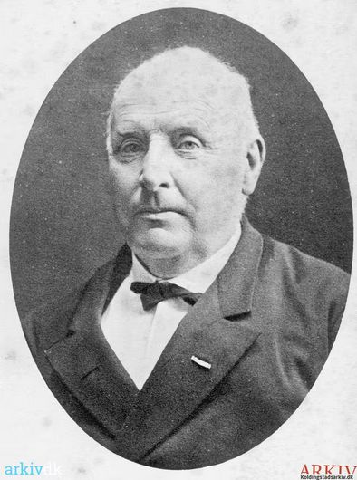
Bildquelle: arkiv.dk / Kolding Stadsarkiv - Lizenz: Public Domainumgehend schriftlich Nachricht über den Fund - natürlich schriftlich - Telefonie gab es ja noch garnicht! Die kam ja erst ab ca. 1890 in Dänemark ganz langsam in Gang. Carl Christian Rafns Ausarbeitung zu dem Runenstein erschien 1861 - Mindesteen ved Kleggum Höi, S. 189-194, in: Antiquarisk Tidsskrift, 1858-1860. Auf seine Bitte hin, schreibt Rafn dort, war der Gemeindepfarrer, Carl Peter August Kofod (*01.09.1814 - 31.05.1881 - link-LIVES - Bild von seinem Grabstein auf dem Kirchhof von Todbjerg),
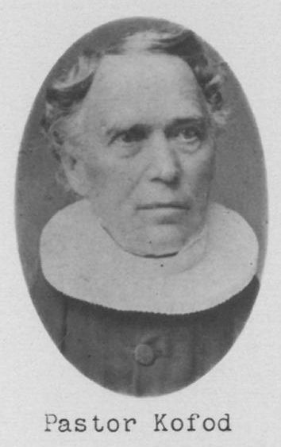
Bildquelle: Trøst-Hansens sognekort - Nr. 3136 - Lizenz: Public Domain
bereit eine genauere Untersuchung durchzuführen und schickte anschließend eine genauere Kopie. Er hatte auch versucht, einen Abdruck anzufertigen, aber die Schriftlinien waren zu abgenutzt, um erfolgreich zu sein. Der Pfarrer untersuchte zusammen mit mehreren anderen Personen die nicht ganz so deutlichen Merkmale der Inschrift häufig unter unterschiedlicher Beleuchtung und lieferte im weiteren Briefwechsel weitere Informationen zu einigen der Runen.
Auf der Südseite des Steines steht in zwei senkrechten Bändern die Inschrift. Sie unterscheidet sich von allen anderen wikingerzeitlichen Runeninschriften dadurch, dass sie voll Abkürzungen ist. Aufgrund der Inschrift wird der Stein in die Zeit von 900 - 950 datiert. Die Inschrift verläuft in zwei senkrechten Runenbändern die jeweils oben abgerundet sind. Der Text beginnt in der linken Zeile und beiden Zeilen werden von unten nach oben gelesen.
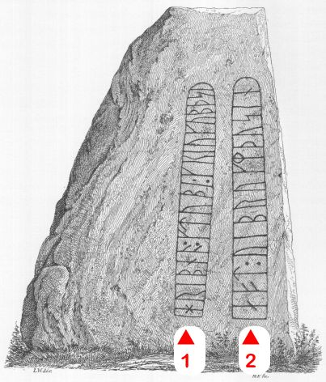
Bildquelle: Zeichnung von Magnus Petersen (*04.09.1827 - 01.02.1917) für Ludv. F. A. Wimmer (*07.02.1839 - 29.04.1920, Philologe und Runenforscher)
Er ist einer von sieben Runensteinen in Dänemark, die heute noch an ihrem ursprünglichen Platz stehen, wie z.B. der Stein von Glavendrup/Fünen, der innerhalb einer Anlage der gleichen Art wie Bække steht. Sowohl bei Bække als auch bei Glavendrup zeigen Standort und Text der Inschrift, dass der Runenstein jeweils mit der Schiffssetzung als zusammengehöriges Denkmal zu verstehen ist.
Die Schiffssetzung mit dem Runenstein ist ein Grabmonument, das vielleicht ein Schiff symbolisiert, welches den Toten nach Walhalla bringen sollte. Die beiden runden Bronzezeithügel haben nichts mit der Schiffssetzung zu tun, aber sie sollten wohl ihre Bedeutung hervorheben, was auch bei der Schiffssetzung von Glavendrup der Fall ist. Eine Untersuchung des am Ostende der Schiffssetzung liegenden Hügels im Jahre 1958 ergab, dass er ein bronzezeitliches Grab enthielt. Der Hügel wurde in drei Stufen aufgebaut, wobei die zwei innersten Hügel von einer aus mehreren Schichten bestehenden - etwa 1 m hohen - Steinmauer umgeben sind.
Der Grabhügel am Ostende der Schiffssetzung wird laut einer alten Berichterstattung von 1864 Kalægums oder Kaleghis Hügel genannt, und die Sage berichtet, dass ein König oder Krieger dieses Namens hier begraben wurde. Der Name ist sicher noch sehr viel älter. Ole Worm (*13.05.1588 - 31.08.1654, Arzt, Universalgelehrter und der Begründer der Runologie)
 Bildquelle:
Digitale Sammlung der Königlichen Bibliothek Kopenhagen -
Lizenz:
Public Domain
Bildquelle:
Digitale Sammlung der Königlichen Bibliothek Kopenhagen -
Lizenz:
Public Domain
hatte den dänischen König Christian IV. (*12.04.1577 - 28.02.1648)
 Bildquelle:
Wikipedia - Lizenz:
Public Domain
Bildquelle:
Wikipedia - Lizenz:
Public Domain
im Jahre 1626 dazu bewegt per Rundschreiben alle dänischen Pfarrer aufzufordern, Runensteine, alte Gräber und sonstige Altertümer in ihrem Sprengel zu melden. In einer Rückmeldung, die sich in "Ribe Stifts Beskrivelse 1638" - gesammelt von O.Nielsen, 1875, Kopenhagen - als Sonderdruck in "Danske Samlinger 2, Band 4" (S. 85 - = S. 87 in der pdf-Datei) bewahrt hat, heißt es (übersetzt): "Im Norden des Ortes liegt ein Grabhügel der < Karls legoms Hügel > genannt wird". Den Namen "Kollegens Høi" erhielt er hingegen in "Den Danske Atlas" - Tomus V, Cap. 10, Del 2, II - von Erik Pontoppidan (der Jüngere, *03.09.1698 - 20.12.1764) . Dort steht auf S. 962 - übersetzt:"...im Kollegens Hügel auf dem gleichen Feld soll ein Krieger zwischen einigen Steinen begraben sein" (S. 15 h in der pdf-Datei).
Die ganze Anlage wurde 1890 unter Denkmalschutz gestellt.
Diese Zeichnung bringt George Stephens (*13.12.1813 - 09.08.1895, englischer Archäologe und Philologe)
 Bildquelle:
Minder fra min Virksomhed paa Arkæologiens
Omraade fra 1845 til 1908 von
Magnus Petersen (*04.09.1827 - 01.02.1917) auf der
Seite 265 - Lizenz:
Public Domain
Bildquelle:
Minder fra min Virksomhed paa Arkæologiens
Omraade fra 1845 til 1908 von
Magnus Petersen (*04.09.1827 - 01.02.1917) auf der
Seite 265 - Lizenz:
Public Domain
in seinem Werk The old-northern runic Monuments of Scandinavia and England, Vol. 2, 1867-68 auf der S. 732 und bezeichnet den Runenstein als "Kleggum Stein".
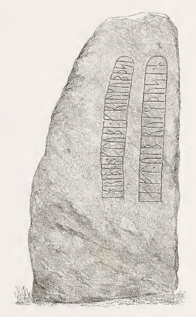
Diese Zeichnung aus dem Jahr 1859 stammt aus der Feder von Heinrich Hansen (*23.11.1821 - 11.07.1890, Architekturmaler - link-LIVES)
 Bildquelle: Fotografie aus dem Jahr 1883 von
Fotograf Vilhelm Tillge
(8.4.1843-9.4.1896) -
Det Kgl. Biblioteks billedsamling - Lizenz:
Public Domain.
Bildquelle: Fotografie aus dem Jahr 1883 von
Fotograf Vilhelm Tillge
(8.4.1843-9.4.1896) -
Det Kgl. Biblioteks billedsamling - Lizenz:
Public Domain.
Unter diesem Link kann man ein coloriertes Aquarell (ca. 19 x 30 cm) von Magnus Petersen vom 05.09.1871 betrachten, das die Schiffssetzung mit dem Runenstein zwischen den beiden Grabhügel mit der Beschriftung "Kleggumhøjene og HRIBNA-runestenen" zeigt. Es ist auf der Homepage des Dänischen Nationalmuseums, Digitale Sammlungen, eingestellt (Die sw Variante davon siehe unten bei Thorsen).
Mehrere Zeichnungen von Prof. Julius Magnus Petersen (*04.09.1827 - 31.01.1917, Archäologischer Zeichner und Restaurator - link-LIVES - Bestattungsprotokoll)
 Bildquelle: Fotografie
von 1903 von Fotograf Marius Christensen
(*24.6.1874 -
25.6.1907) -
Det Kgl. Biblioteks billedsamling - Lizenz:
Public Domain
Bildquelle: Fotografie
von 1903 von Fotograf Marius Christensen
(*24.6.1874 -
25.6.1907) -
Det Kgl. Biblioteks billedsamling - Lizenz:
Public Domain
wurden in den beiden großen dänischen Runenwerken aufgenommen. Prof. P. G. Thorsen (*07.08.1811 - 06.05.1883, Bibliothekar, Runenforscher und Historiker - link-LIVES - Artikel: Levnedsbeskrivelser af de ved Københavns Universitets Firehundredaarsfest promoverede Doktorer, Illustreret Tidende 1882, Nr. 1235 - vom 27.05.1833 / Grabstein in Varde / Eheschließung in Varde am 19. August 1848)
Bildquelle: Fotografie zw. 1863-1900 von
Fotograf Budtz Müller (*26.12.1837 -
30.12.1884) -
Det Kgl. Biblioteks billedsamling - Lizenz:
Public Domain
gibt diese in "De danske runemindesmærker beskrevne og forklarede, anden Afdeling, Jyllands Runemindesmærker, I. Afbildninger, 1879, Nr. 2" wieder - jeweils eigener Scan aus dem in meinem Besitz befindlichen Exemplar. Schriftliche Ausführungen von ihm folgen erst in seinem Band II, Text, 1880, auf den S. 1-8.
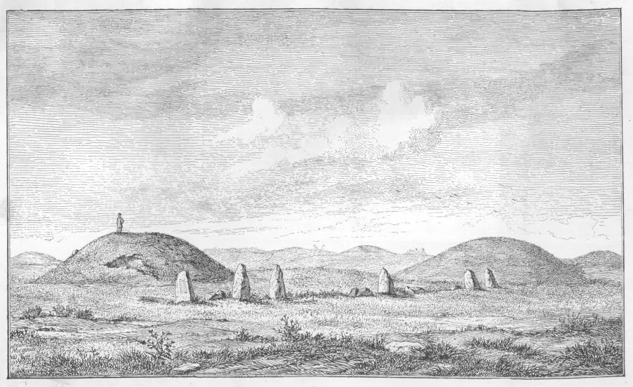
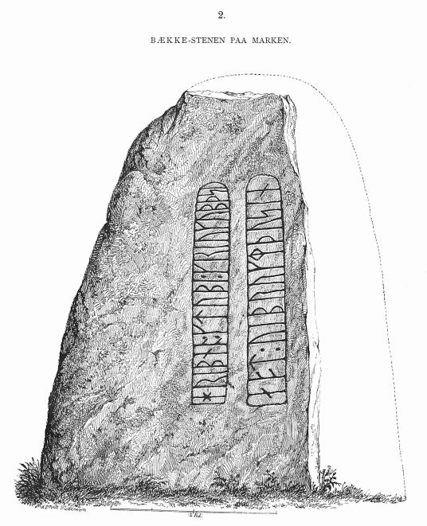
P. G. Thorsens Nachlass (Bezeichnet als: P. G. Thorsens optegnelser, tegninger m.m. vedrørende runer og runemindesmærker - überführt aus der Kopenhagener Universitätsbibliothek 1929 - Gemäß Ministerialschreiben vom 04.03.1929; früher benannt als Additamenta 612 kvart) - befindet sich heute in der Königlichen Bibliothek unter NKS 3296 kvart (in mehreren einzelnen Pappschachteln). In der Pappschachtel Nr. 17 werden diese Zeichnungen von Magnus Petersen, datiert auf den 05.09.1871, verwahrt, die vermutlich später als Druckvorlage - siehe oben - dienten.


Prof. Ludv. F. A. Wimmer (*07.02.1839 - 29.04.1920, Philologe und Runenforscher - link-LIVES - Politiets registerblade - Bestattungsprotokoll)
 Bildquelle:
Fotografie zw. 1877-1900 von Fotograf Hansen & Weller
-
Det Kgl. Biblioteks billedsamling - Lizenz:
Public Domain
Bildquelle:
Fotografie zw. 1877-1900 von Fotograf Hansen & Weller
-
Det Kgl. Biblioteks billedsamling - Lizenz:
Public Domain
schildert seine Forschungsergebnisse in seinem großformatigen Werk "De danske runemindesmærker undersøgte og tolkede af Ludv. F. A. Wimmer, Andet Bind, Runestenene i Jylland og på øerne. 1899-1901, Nr. 11, S. 85ff." - eigene Scans.
Zunächst bringt Ludv. F. A. Wimmer auf S. 86 eine zeichnerische Darstellung von Magnus Petersen, die die Gesamtanlage in der Landschaft zeigt.
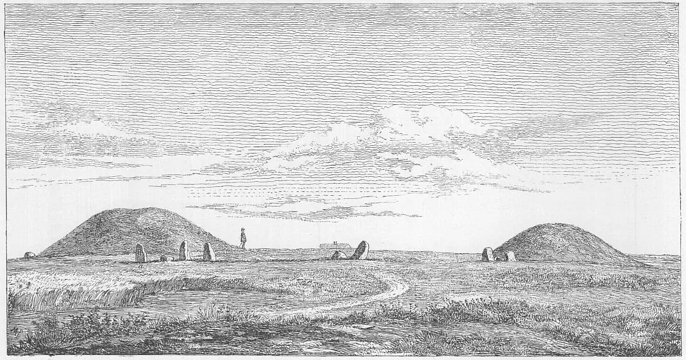
Danach wird eine Zeichnung von Magnus Petersen wiedergegeben, die Ludv. F. A. Wimmer als Plan bezeichnet. Mit "a" bezeichnet er darin die Bodenvertiefung, in der der Runenstein mit der Inschrift nach unten liegend gefunden wurde.
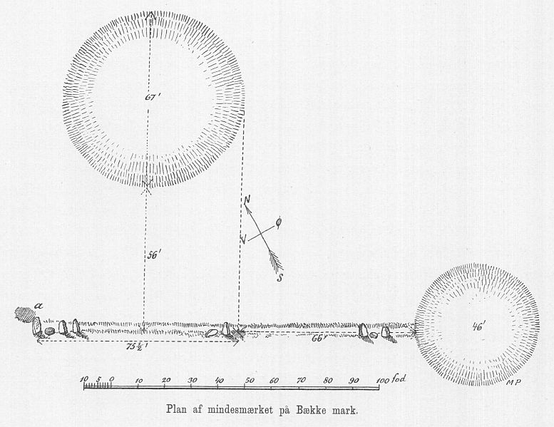
Dieser Zeichnung und dem Text von Ludv. F. A. Wimmer auf S. 87 kann entnommen werden, dass er die Steine nicht unmittelbar als Schiffssetzung angetroffen hat. Es sah die vorhandenen Steine eher als Linie, aber es hatte für ihn mehr den Anschein, dass etliche Steine fehlten. Insgesamt betrachtet ging er deshalb nicht einfach von einer geraden Steinreihe aus. In der nächsten Abbildung auf S. 88 gibt Ludv. F. A. Wimmer in einer eigenen Zeichnung deshalb seine Vorstellung der Gesamtanlage - eine an den einen Grabhügel angelehnte Schiffssetzung mit Runenstein als Stevenstein - ab.
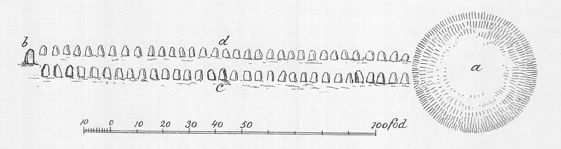
Legende: a = Grabhügel - b = Runenstein - c = Steine der Schiffssetzung - d = die verschwundene Steinreihe
Auf S. 90 ist dann eine Zeichnung des Runen-/Stevensteins von Magnus Petersen, die von Ludv. F. A. Wimmer noch überarbeitet wurde, zu sehen.
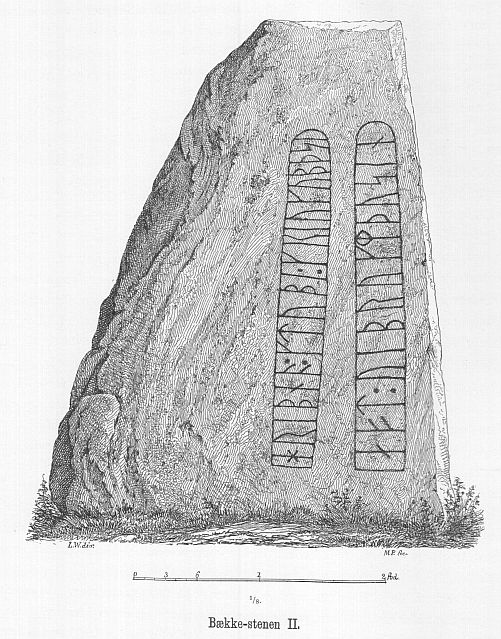
Ludv. F. A. Wimmer hat die Örtlichkeit zweimal - am 19./20. Juli 1878 und am 06.07.1882 - aufgesucht und untersucht.
Er hat seine jahrelangen Aufzeichnungen der
"Kgl.
Bibliotek" in
Kopenhagen
überlassen. Ein
Verzeichnis darüber wurde 1915 in Buchform herausgegeben -
In seinen Unterlagen in der Bibliothek befinden sich unter "III - Originaltegninger af de danske Runemindesmærker, udførte paa Undersøgelsesrejserne af Magn. Petersen og kontrollerede paa Stedet af Ludv. Wimmer, samt Prøvetryk af de paa Grundlag af de nævnte Tegninger, Aftryk o. s. v. til De danske Runemindesmærker" udførte Afbildninger med Wimmers Rettelser" zu dem Runenstein von Bække 2 unter der Nr. 28 diese handschriftlichen Aufzeichnungen von 1878 und 1882, die ich am 27.09.2022 fotografieren durfte.


Die Fotografien habe ich als Miniaturansicht eingefügt, die sich über einen Mausklick deutlich vergrößern lassen.
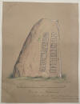 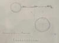 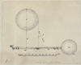 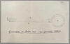 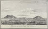


Aufnahme des dänischen Runologen Erik Moltke (*04.04.1901 - 19.10.1984, Runologe, Historiker - link-LIVES)
 Bildquelle: Scan von Buchumschlag "Runerne i Danmark og ders
oprindelse" - Erik Moltke - 1976 - Lizenz:
CC-BY-SA
Bildquelle: Scan von Buchumschlag "Runerne i Danmark og ders
oprindelse" - Erik Moltke - 1976 - Lizenz:
CC-BY-SA
die er am 29.04.1930 fertigte.
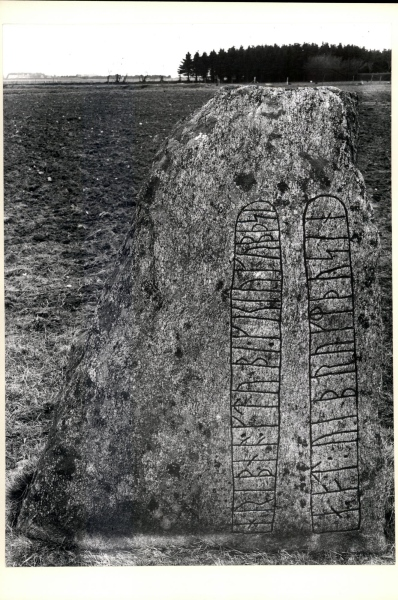
Der Digitale Sammlung Nationalmuseum Kopenhagen entlehnt - Lizenz: CC-BY-SA
Im Vorfeld zu dem 2016 erschienenen Buch von Lisbeth M. Imer (*1973, Runologin am Nationalmuseum Kopenhagen) "Danmarks Runesten - en fortælling" reiste sie mit dem Fotografen Roberto Fortuna zur Bestandsaufnahme durch die Lande. Dieser hat die Runensteine abends bei Dunkelheit mit Schräglicht aufgenommen und darüber wirklich herausragende Fotos erzielt. Diese Aufnahme entstand am 08.11.2011.
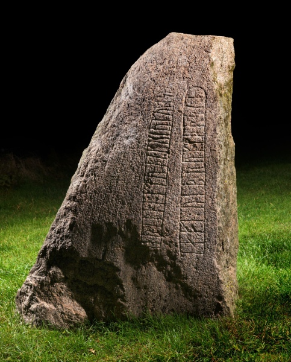
Der Digitale Sammlung Nationalmuseum Kopenhagen entlehnt - Lizenz: CC-BY-SA
Den Eintrag zu diesem Runenstein aus der dänischen Runen Datenbank im Internet kann man hier abrufen.
Die Informationen in "Fund og Fortidsminder" zu dem Runenstein / zu der Schiffssetzung finden sich hier.
Über die Webseite "Runes" - ein Forschungsprojekt der Akademie zu Göttingen - kann man diese Informationen zum Runenstein von Klebæk Høje abrufen.
Karte mit eingezeichneter Örtlichkeit "Klebæk Høje"
Bækkemonumentet / Klebæk Høje. Bildserie v. Jørgen Drostrup Andersen om det meget smukke og spændende fortidsminde ved Hærvejen
Eine weitere Bildserie zur Einweihung der neugestalteten Schiffssetzung vom 10.06.2011 findet sich hier.
Literaturhinweise:
C. C. Rafn - Mindesteen ved Kleggum Höi, S. 189-194, in: Antiquarisk Tidsskrift, 1858-1860
Carl Säve - Yderligere Bemærkninger om runestenen ved Kleggum Höi, S. 272-273, in: Antiquarisk Tidsskrift, 1858-1860
H. C. Broholm - Skibssætninger i Danmark, Fra Nationalmuseets Arbejdsmark, 1937, S. 11-26
Olfert Voss - ...efter deres mor Vibrog, SKALK, 1957, Nr. 1, S. 5-7
Olfert Voss - Mikroliter, SKALK, 1957, Nr. 4, S. 27-28
Birgit Sawyer - The Viking-age rune-stones: custom and commemoration in early medieval Scandinavia, Oxford 2000, s. 158 ff.
Gunhild Øeby Nielsen - Runesten og deres fundforhold, 2007, S. 67 ff. und S. 200
Monumentale skibssætninger i Danmark og Skåne - Felix Vestergaard - KUML 2007, Nr. 56, S. 145 - 190 - Beitrag zu Klebæk Høje / Bække 2 = S. 175
Lisbeth Imer - Fortidens kalejdoskop om definitionen af kontekster i runologien, in: Arkæologisk Forum Nr. 24, Mai 2011, S. 41